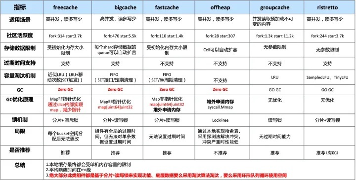

Web [1] #
-
Httprouter radix tree
-
chi
- 最简单的框架 适合作为web框架入门项目 核心代码1200行+
-
Gin
- 主要组件
router 支持分组
middleware
binding-decoder和validator logger context - 老牌框架 核心代码3000行
- 主要组件
router 支持分组
middleware
-
echo
-
Fiber
- 基于fasthttp
-
beego
微服务[1] #
组件 #
- config
- logger
- metrics Prometheus
- tracing OpenTelemetry
- registry
- MQ
- 依赖注入 wire，dig
框架 #
- GoMicro [2] +
- Go-Zero
- YOYOGO
- Dubbo GO
- Kratos[bili开源]
- goframe
本地缓存[3] #
- freecache
- bigcache
- fastcache
